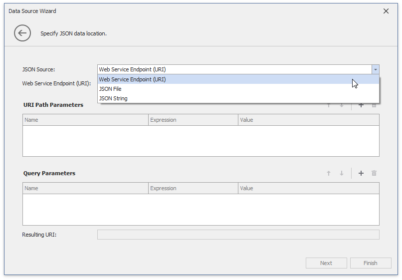
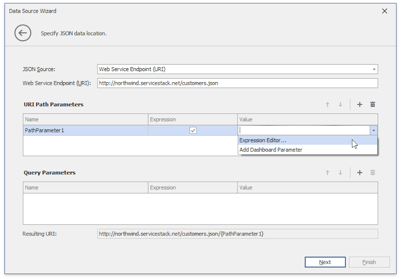

Binding to JSON Data Sources
Jason Data Sources allows you to extract JSON data from a Web-service endpoint URI, text file, or a string in JSON format. To bind a dashboard to Jason Data Sources, do the following.
Click the New Data Source button in the Data Source ribbon tab.

On the first page of the invoked Data Source Wizard dialog, select JSON data source and click Next.

Select the JSON source type and specify the JSON data location.
Web Service Endpoint (URI)
Specify a URL to a file in the JSON format.

On the next page specify the Web Service Endpoint's request parameters (username and password, HTTP headers, or query parameters).

JSON String
Provide data in the JSON format.

JSON File
Specify the JSON file location.

Select the root node and click Finish